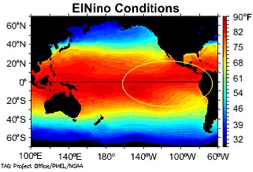
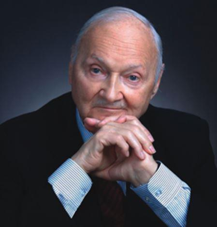
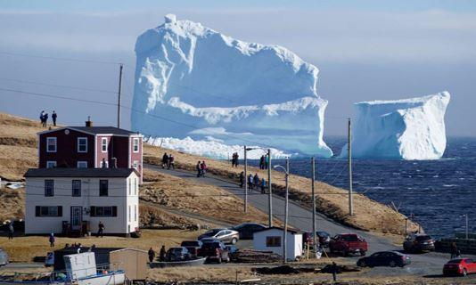
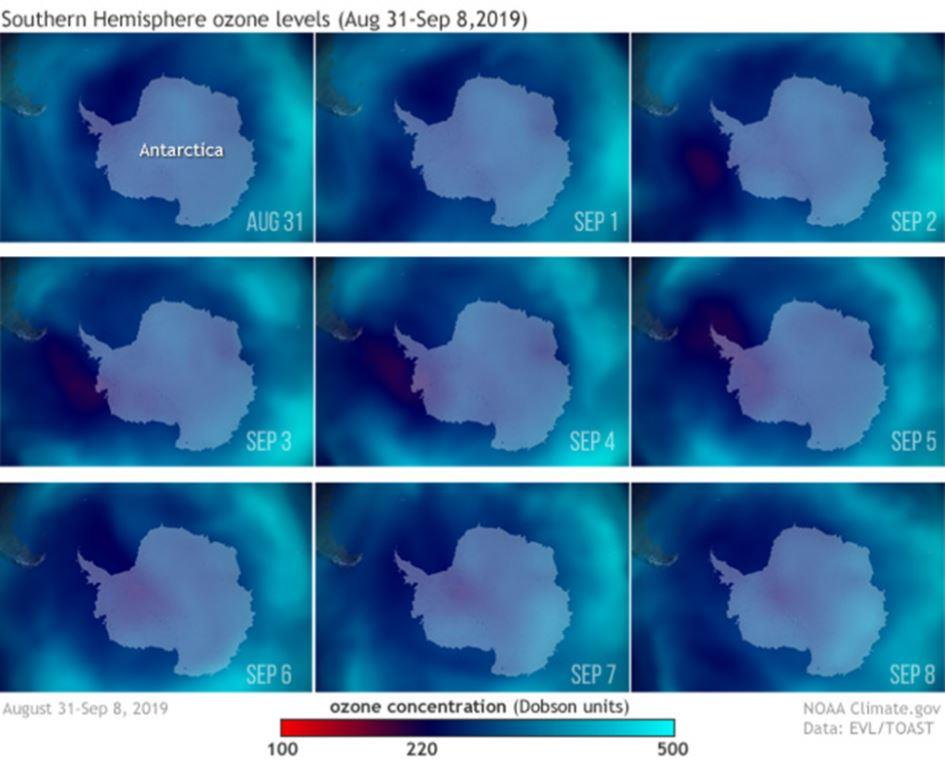
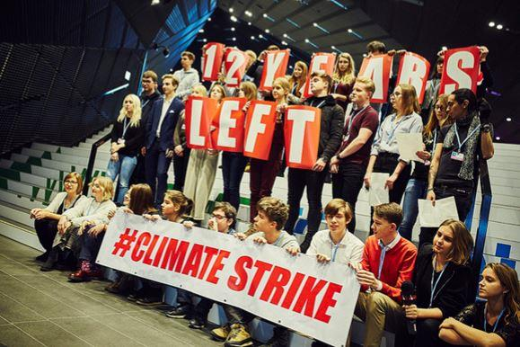

Michel Gay nous livre une synthèse de la conférence de Richard Lindzen, membre de l’US Academy of Sciences et de l’Academy Advisory Council du Global Warming Policy Foundation et auteur de plus de 200 publications en météorologie et climatologie, présentée à la Global Warming Policy Foundation.
Les deux cultures littéraire et scientifique ont chacune leurs domaines de prédilection qui, parfois, se chevauchent mal…
Sciences, littérature, et politique
Richard Lindzen
Voici plus de 50 ans, le britannique Charles Percy Snow, ingénieur chimiste et écrivain, analysait de façon remarquable leurs implications réciproques :
« J’ai souvent constaté que des personnes cultivées dans le domaine littéraire s’étonnaient de l’ignorance des scientifiques en littérature. Une fois, ayant été provoqué dans une réunion, j’ai demandé combien d’entre eux seraient capables d’expliquer le second principe de la thermodynamique. Aucune main ne s’est levée.
Pourtant je leur demandais l’équivalent de « Avez-vous lu une œuvre de Shakespeare ? »
Je crois que si j’avais posé une question encore plus simple, telle que « Que pensez-vous de la masse, ou de l’accélération » qui est l’équivalent scientifique de « Savez-vous lire ? », moins d’une personne sur dix de cette noble assemblée aurait pu répondre quelque chose de cohérent. Ainsi, la majorité des gens parmi les plus intelligents du monde occidental ont autant d’idée que leurs ancêtres du néolithique au sujet de la physique.
Richard Lindzen
L’ignorance de la physique n’empêche peut-être pas la compétence dans d’autres domaines, mais elle réduit considérablement la capacité des non scientifiques, et notamment des politiciens, à gérer des affaires à fort contenu scientifique.
Leur défaut de compréhension incite aussi parfois à une exploitation malveillante de leur crédulité.
Pour répondre aux nécessités de la démocratie représentative, ces béotiens en physique doivent pourtant parfois prendre position sur des questions scientifiques. Mais leur compréhension des problèmes est souvent remplacée par la croyance ou la foi. Pour les rassurer, leur entourage leur donne des explications grossièrement simplifiées, au point d’être fausses.
Le thème complexe du réchauffement climatique offre ainsi de nombreux exemples de raisonnements biaisés et faux.
Le système climatique
Le système climatique consiste en deux fluides turbulents (l’atmosphère et les océans) interagissant l’un avec l’autre en échangeant de la chaleur. Et la turbulence limite la prédictibilité.
Les deux substances à effet de serre les plus importantes sont de loin la vapeur d’eau et les nuages qui constituent d’importants réflecteurs de la lumière solaire.
Un tel système, commandé principalement par le soleil, va fluctuer avec des échelles de temps s’échelonnant de la seconde au millénaire, étant donné la masse que représentent les océans.
Le courant marin El Niño en est un exemple, relativement court, dont le cycle se mesure en années. Mais la plupart de ces cycles de variations sont trop longs pour être seulement mis en évidence dans nos séries de relevés sur des périodes courtes.
La nature présente de nombreux exemples de variabilité autonome comme le cycle des taches solaires d’environ 11 ans, et l’inversion du champ magnétique terrestre tous les cent mille ans environ.
Lorsque le discours habituel présente la « science du climat » comme une « science établie », il faut se rappeler la complexité des mécanismes et la variabilité de ce système hétérogène.
Le discours à la mode et ses origines
Le discours en vogue sur le climat présente la variation de la température moyenne globale comme d’abord contrôlée par une variation de 1 % à 2 % du dioxyde de carbone (CO2) parmi les nombreuses autres variables d’importance comparable.
Cette revendication extraordinaire confine à la magie.
C’est pourtant ce discours largement accepté qui porte la marque du problème que Charles Percy Snow a identifié.
La contribution du CO2 d’origine humaine est pourtant faible en comparaison des échanges naturels beaucoup plus importants causés à la fois par les océans et la biosphère, mais les politiciens sont convaincus de savoir précisément quelle politique doit être mise en œuvre pour contrôler les niveaux de CO2.
Durant les deux derniers siècles, plusieurs scientifiques avaient proposé ce point de vue qui avait été abandonné dans les années 1980.
Mais, en 1988, le scientifique James Hansen de la NASA indiqua au Sénat américain que la forte chaleur estivale était la conséquence de niveaux de CO2 accrus.
La promotion récente de cette position extrême, devenue un dogme, est due à quelques acteurs cherchant à exploiter les opportunités financières offertes par des milliardaires du secteur de l’énergie.
À titre d’exemple, Maurice Strong, un affairiste planétaire fréquemment cité comme l’initiateur du mouvement du réchauffement global au début des années 1980, fut l’éminence grise de la Conférence de Rio (qui déboucha sur la Convention-cadre des Nations Unies sur le réchauffement climatique). Il a passé ses dernières années en Chine, apparemment dans le but d’éviter des poursuites pour son rôle dans les scandales du programme des Nations Unies « Pétrole contre Nourriture ».
Depuis lors l’enthousiasme pour cette thèse n’a fait que croître à mesure que l’idéologie politique « verte » jouait un rôle majeur.
Il y a quelques années, Christiana Figueres, alors secrétaire exécutive de la Convention-cadre des Nations Unies sur le réchauffement climatique, a déclaré :
« C’est la première fois dans l’histoire du genre humain que nous nous donnons pour tâche de changer intentionnellement le modèle de développement économique qui règne depuis au moins 150 ans ».
Un proche conseiller du pape François, le cardinal Oscar Rodriguez Maradiaga, a même fustigé les conservateurs climato-sceptiques américains en leur reprochant leur avidité financière :
« L’idéologie entourant les aspects environnementaux est trop liée aux capitalistes qui refusent de cesser de ruiner l’environnement parce qu’ils refusent d’abandonner leurs profits ».
En août 2018, un article publié dans les Proceedings of the National Academy of Sciences était émaillé de « il se pourrait que » et « il est possible que », et concluait pourtant doctement qu’une « action collective de l’humanité » était nécessaire pour « piloter le Système Terre » afin de le maintenir habitable.
Les auteurs indiquaient que cela nécessiterait « des changements comportementaux, des innovations technologiques, de nouvelles méthodes de gouvernance et la transformation des valeurs sociales ».
Personne ne semble remarquer une incohérence : dans un monde qui encense le « principe de précaution », la simple crainte d’une éventualité lointaine de danger justifie de décider d’une action extrêmement risquée immédiatement.
Il est possible que ces personnes recherchent un pouvoir, ce qui nécessite de remettre tout en cause, y compris par un retour en arrière. Le bien-être que le peuple a acquis, et continue d’acquérir, grâce à la révolution industrielle permise par les combustibles fossiles, doit être aboli. Le peuple doit retourner à sa condition de serf que cette fausse élite « verte » juge sans doute plus appropriée.
Le politique se discrédite
Nos dirigeants ont peur de montrer leur désaccord éventuel avec les scientifiques qui soutiennent la théorie du réchauffement climatique anthropique (RCA). A la manière du lemming (un animal de la toundra proche des régions arctiques qui pratiquerait le suicide de masse), ils se mettent en devoir de planifier la destruction de la société industrielle, consciemment ou non.
De nouveau, quelle belle illustration du problème identifié par Charles Percy Snow.
Mais il est intéressant de noter que le peuple (par opposition à nos « élites cultivées ») tend à percer la fragilité de cette argumentation qui discrédite une classe politique de plus en plus vulnérable, ainsi qu'un grand nombre de nos scientifiques qui font la promotion de telles sottises. Ce qui conduit également à une perte de confiance dans la science "officielle".
Considérons tout d’abord les « élites vulnérables ».
Elles ont suivi une formation dans un système où le succès est fondé sur leur aptitude à plaire (au professeur, à l'employeur, aux électeurs…). En d’autres termes, elles ont été formées à ne rien rationaliser.
Elles sont vulnérables aux discours trompeurs, tout en étant financièrement plus aisées que les gens du peuple et même, pour une partie, suffisamment habiles pour en tirer profit.
Le discours est suffisamment simplifié pour que l’élite pense qu’elle « comprend » la science.
Beaucoup de personnes éprouvent le besoin d’être considérées comme intelligentes. Elles craignent d’être regardées comme ignorantes en prenant position contre une « vérité établie » présentée comme « scientifique », et cette crainte submerge toute liberté de penser différemment.
Qu’en est-il des scientifiques ?
Beaucoup de scientifiques ont été conduits à s’intéresser à la climatologie en raison des fabuleux financements qui ont accompagné l’hystérie du réchauffement climatique.
Certains scientifiques utilisent adroitement leur statut pour promouvoir leurs propres positions politiques (mouvements contre les armes nucléaires, contre l’Initiative de Défense Stratégique, contre la Guerre du Vietnam, etc.).
Certains scientifiques ont aussi une conscience cynique de l’ignorance des non-scientifiques et de leur pouvoir de manipulation sur les « ignorants ». Il en résulte que les élites sont soulagées par l’assurance que « tous » les scientifiques sont d’accord sur l’origine humaine du réchauffement climatique (ce qui est loin d’être le cas).
L’évidence
Certains pourraient s’étonner de cette évidence proclamée du danger du réchauffement climatique.
Qu’en est-il de la fonte des glaces arctiques, de l’élévation du niveau des mers, des phénomènes météorologiques extrêmes, des ours polaires mourant de faim, des guerres civiles, et de tout le reste ?
Même si ces observations étaient correctes (souvent elles ne le sont pas), elles n’impliqueraient pas ipso facto l’effet de serre comme cause.
Ni non plus un danger comme conséquence.
Le but de ces déclarations est d’effrayer le public, de lui brouiller les idées, et de faire en sorte qu’il lui semble qu’il y a une évidence là où, en fait, il n’y en a pas.
La seule évidence est celle de l’exactitude de l’observation de Charles Percy Snow.
Concernant les températures extrêmes, les données ne manifestent aucune tendance. Et le GIEC en convient. Même Gavin Schmidt, successeur de Jim Hansen au bureau de la NASA à New York, a déclaré que la perception par les gens que « le réchauffement climatique signifie que les phénomènes extrêmes doivent aller croissant » est un « non-sens ».
L’incapacité à distinguer entre météo et climat se trouve au cœur de ce « non-sens ».
Ainsi, le réchauffement climatique renvoie à l’accroissement bienvenu d’environ 1°C de la température depuis la fin du Petit âge glaciaire il y a quelque 200 ans.
Les phénomènes météorologiques extrêmes mettent en œuvre des changements de température de l’ordre de 20°C. Des changements de température aussi importants ont une origine totalement différente du réchauffement climatique.
Ils résultent de vents transportant de l’air chaud ou froid par vague depuis des régions lointaines, et dont la force dépend de la différence de température entre les régions tropicale et arctique (plus les différences sont grandes, plus les vagues sont puissantes).
Or les modèles utilisés pour faire des prévisions de réchauffement climatique prédisent tous que cette différence de température va décroître plutôt que croître.
Donc l’accroissement des extrêmes de température serait mieux en rapport avec un refroidissement global plutôt qu’avec un réchauffement global.
En fait, il semble n’y avoir aucune tendance discernable dans les phénomènes météorologiques extrêmes. Il y a seulement une plus grande attention portée par les médias à l’exploitation de ces « informations » émotionnelles qui font de l’audience.
Or, les prévisions de catastrophes dans un futur lointain sont peu inquiétantes.
Par conséquent, il leur faut un moyen de convaincre le public que le danger est immédiat, même s’il ne l’est pas.
C’est aussi le cas avec l’élévation du niveau des mers.
Le niveau des mers s’accroît d’environ 20 cm par siècle depuis des centaines d’années, et nous avons su nous en accommoder.
Mais, pour susciter la peur, on invoque des modèles qui prédisent des élévations beaucoup plus rapides.
En pratique, dans la plupart des sites côtiers, les variations du niveau de la mer, tels que mesurés par des jauges de marée, sont de longue date principalement dues à des variations du niveau du sol résultant de mouvements tectoniques et de travaux d’aménagement du territoire.
De surcroît les petits changements observés de la température moyenne globale sont beaucoup plus faibles que les prévisions des modèles informatiques du GIEC.
L'homme est-il responsable ?
La part de l’accroissement de CO2 due à l’homme est faible, mais le GIEC n'hésite pas à déclarer que la plus grande part du réchauffement des 60 dernières années serait due aux activités humaines. Et ses déclarations sont équivalentes à une preuve du désastre imminent.
Ainsi, la fonte des glaces du Groenland se serait amplifiée suite au réchauffement qui ne ferait qu’empirer1. Sauf que la « US National Oceanic and Atmospheric Administration » et le « Danish Meteorological Institute » ont découvert qu’en réalité la masse de glace du Groenland a augmenté2.
En fait ces deux observations peuvent être toutes les deux vraies : la formation globale de glace pousse la glace périphérique à la mer.
Déformation, exagération, et mensonge couvrent parfaitement la soi-disant évidence du RCA pour mieux la masquer les preuves contraires.
Conclusion
Une conjecture invraisemblable soutenue par une fausse évidence répétée jusqu'à la nausée, est devenue « un savoir » politiquement correct utilisé pour promouvoir la mise à bas de la civilisation industrielle contre le peuple.
Nos petits-enfants n'hériteront pas d'une planète abîmée par le progrès industriel, mais par l’histoire d’une insondable sottise qui l’aura dégradé par des éoliennes rouillées et des rangées de panneaux solaires délabrés.
Il y a cependant au moins un aspect positif à la situation présente. Comme aucune des politiques proposées fondées sur les énergies renouvelables éoliennes et solaires n’aura d’effet sur les gaz à effet de serre, l’humanité continuera à bénéficier du rôle efficace du CO2 à la fois comme fertilisant de la végétation et comme réducteur de la vulnérabilité des plantes à la sècheresse.
Et pendant que le GIEC prétend qu’il faut empêcher un accroissement supplémentaire du réchauffement de 0,5°C, le dernier accroissement de 1°C s’est accompagné de la plus grande amélioration du bien-être que l’humanité ait connu dans son histoire.
Allez donc comprendre…
Commentaire complémentaire de Michel Gay
Certains s’inquiètent de la croissance démographique rapide et craignent que la planète ne devienne trop petite pour nourrir une population de plus en plus nombreuse.

Katowice by Greenpeace Polska (CC BY-ND 2.0) — Greenpeace , CC-BY
Peut-être sont-ils tentés par la mise œuvre de mesures coercitives et radicales (dictature verte3.) visant à limiter la démographie ?
En effet, puisque le CO2 favorise l’accroissement et le bien-être de l’humanité, alors il devient un ennemi à combattre. Les gigantesques efforts de réduction des émissions de CO2 feraient alors partie d’une politique malthusienne.
En réalité, la Terre comporte encore de grands espaces disponibles mais le problème majeur sera la production massive d’énergie et, notamment d’électricité bon marché, pour le développement et le confort de l’humanité.
Et le nucléaire est une solution majeure4.
Le nucléaire doit donc être aussi « diabolisé » car il peut produire massivement sans émission de CO2 une énergie électrique de substitution (même partielle) aux énergies fossiles.
Cette source d’énergie abondante, décarbonée, bon marché, et durable, est capable subvenir pour une grande part aux besoins de l’humanité durant plusieurs milliers d’années, notamment avec la technologie des réacteurs à neutrons rapides.
Il est grand temps de refonder une véritable écologie scientifique au service de l’homme pour sortir de l’ornière où nous ont entraînés des écolos-politiques et leur idéologie nihiliste servant de puissants intérêts particuliers.
M.G.
NOTES
1. KA Graeter et al. (2018) Ice core records of West Greenland melt and climate forcing.
Partager cette page